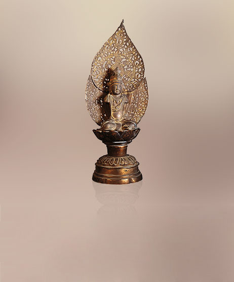

以图像进入苏州博物馆
 资讯NEWS ↗
资讯NEWS ↗ 云课堂LEARNING ↗
云课堂LEARNING ↗
馆藏COLLECTION ↗ 展览EXHIBITIONS ↗
展览EXHIBITIONS ↗ 文创CREATIVE ↗
文创CREATIVE ↗ 建筑美图ARCHITECTURE ↓
建筑美图ARCHITECTURE ↓中而新，
苏而新。
在一座博物馆相遇。
官网第3章图像目的地目录的局部研究 · 2026-10-09
 粉墙 · 黛色边饰 · 自然光
粉墙 · 黛色边饰 · 自然光ARCHITECTURE & VISIT
让光线，
来做设计。
白墙与深灰石材形成清楚的轮廓。庭院、玻璃屋面和几何窗，让建筑在移步之间呈现不同的景色。
中而新 / 苏而新
参观预约与最新开放信息 ↗贝聿铭与苏博 · 官方介绍 ↗延续江南建筑的色彩与空间，
以现代材料回应传统。